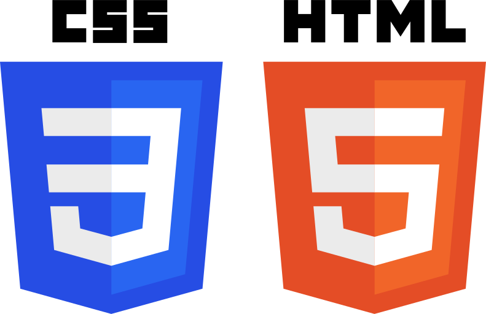

Mes compétences
 Html/CSS
 PHP
PHP Symfony
Symfony Cypress
Cypress Talend
Dans l'optique de poursuivre des études dans un domaine qui me plais, j'ai rejoint le BUT Informatique de Grenoble à l'IUT 2 afin de pouvoir me former. Actuellement étudiant en seconde année, j'ai pu étudier ainsi que pratiquer plusieurs langages de programmation et de balisage comme Java, JavaScript, PHP, mais aussi des Frameworks comme Symfony. Souhaitant me spécialiser dans Java, j'ai entrepris plusieurs projets qui m'ont permis de parfaire ma connaissance du langage.
PHP Symfony Cypress


UHC World est un serveur Minecraft spécialisé dans le mode de jeu Ultra Hardcore (UHC) que je maintiens et développe avec mes amis. Notre projet se distingue par son envie de rassembler toutes les déclinaisons de l'Ultra Hardcore et attire une communauté grandissante de joueurs passionnés et investis qui ne se trouve nulle part ailleurs.
Chaque jour, environ 600 joueurs se connectent à notre serveur pour s'amuser et passer le temps avec d'autres membres de notre communauté. Cette popularité est le résultat d'un travail acharné et d'une collaboration étroite au sein de notre équipe.
Développer et gérer UHC World est une aventure extrêmement enrichissante. Nous avons l'occasion de créer et d'implémenter de nouvelles idées, d'améliorer constamment l'expérience utilisateur, et de gérer une communauté dynamique. Elle nous permet aussi de développer nos compétences en développement, en gestion de serveurs, et en communication au sein d'une équipe et avec notre communauté.

Lors de mon stage au Laboratoire d'Informatique de Grenoble, j'ai eu l'opportunité de travailler sur GazePlay, une application lourde en JavaFX dédiée aux jeux sérieux. GazePlay est spécifiquement conçue pour les personnes handicapées qui utilisent un eye tracker pour interagir avec un ordinateur.
Mon rôle principal consistait à fixer des problèmes et des bugs dans l'application, assurant ainsi une expérience utilisateur fluide et sans accroc. En parallèle, j'ai également contribué à l'ajout de nouveaux jeux dans GazePlay, enrichissant ainsi la diversité et l'accessibilité de l'application.
Ces jeux sont spécialement conçus pour être contrôlés via la technologie de suivi oculaire, permettant aux utilisateurs de jouer et de bénéficier de l'application malgré leurs limitations physiques. Mon travail comprenait non seulement l'implémentation technique des jeux, mais aussi l'assurance qu'ils soient intuitifs et adaptés aux besoins des utilisateurs.
Ce stage m'a offert une expérience enrichissante en développement logiciel, notamment en JavaFX, ainsi qu'une profonde satisfaction en contribuant à un projet qui améliore la qualité de vie des personnes handicapées.